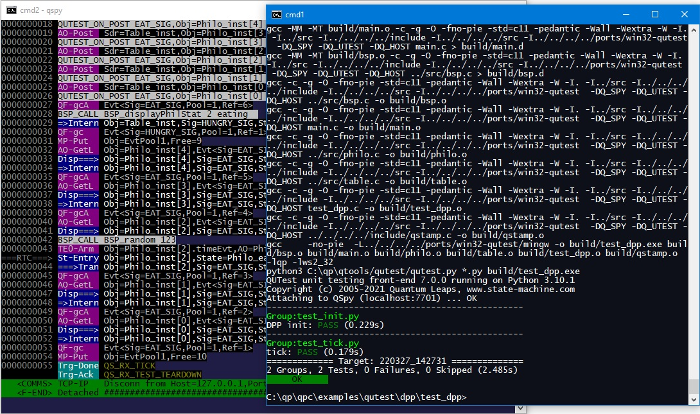

QTools
7.4.0
Collection of Host-Based Tools
The DPP (Dining Philosophers Problem) example shows how to use QUTest in various stages of application development, including not only unit testing, but integration testing as well.
This example is available in both the QP/C as well as the QP/C++ frameworks. The complete code for the DPP example is provided in the directory <qpc|qpcpp>\examples\qutest\dpp\test.
To run the DPP test (on Windows), open a command prompt and type:
qspy
This will start the QSPY host utility with the TCP/IP connection to the Target.
Next, open a second command prompt window and type:
cd C:\qp\<qpc|qpcpp>\examples\qutest\dpp\test_philo make
Makefile will also work on Linux and MacOS. The only difference from Windows is that you open a terminal window and change the directory to ~/qp/<qpc|qpcpp>/examples/qutest/blinky/test.This will build the test fixture as a host executable and then it will run the test script (in Python). The screen shot below shows the output produced in these two command-prompt windows.
